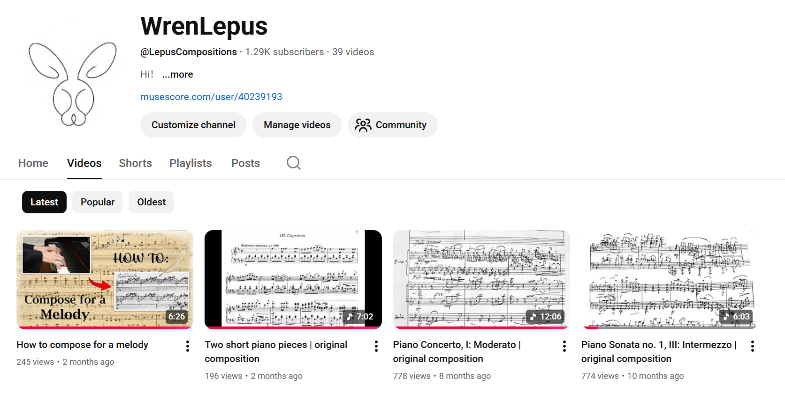
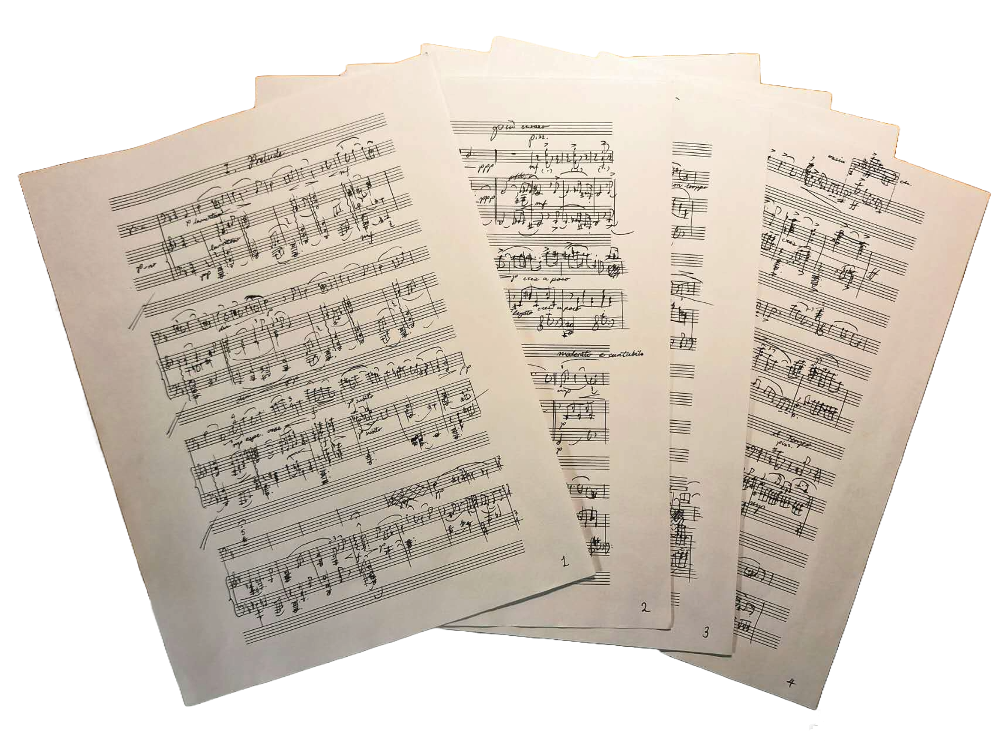

My Music
Introduction
Hello! This is one of the places where I share my music & compositions! I started learning music at seven and was almost immediately enthralled by what it had to offer.
After completing RCM Level 8 in piano and music theory, I continued to self-learn piano and picked up composition. Over the years, I am lucky to have over a thousand people follow my journey on YouTube.


Compositions
I view music as an approximation of the language of the soul. For this reason, the music I compose must remain sincere and faithful to my inner voice. Each piece becomes an attempt to translate personal emotions and reflections into sound.
Below is a project I've worked on for over a year: Piano Sonata No. 1
First movement: Allegro con fuoco
Second movement: Andante sostenuto
Third movement: Intermezzo
Fourth movement: Rondo quasi fantasia & fugue
(in process of learning)